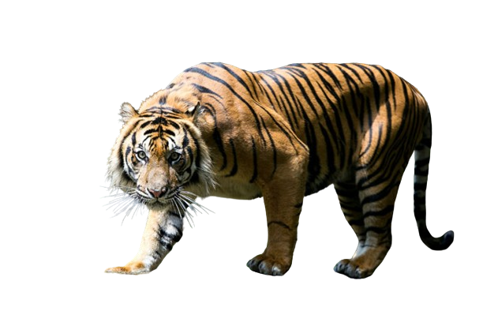

Harimau
Harimau (Panthera tigris) terbagi menjadi sembilan subspesies yang tersebar di Asia, mulai dari daratan Turki hingga ke Rusia dan Indonesia.
Harimau (Panthera tigris) terbagi menjadi sembilan subspesies yang tersebar di Asia, mulai dari daratan Turki hingga ke Rusia dan Indonesia.